6. Paginile aplicației Web
6.1 Login
Atât administratorul cât și utilizatorii au posibilitatea de a se loga într-un cont.
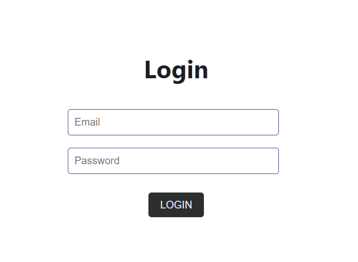 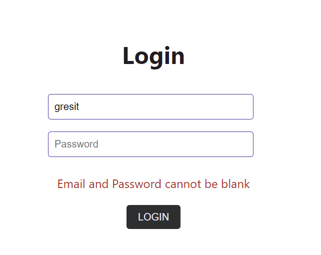6.2 Register
Register: In aceasta pagina își pot crea un cont utilizatorii aplicației. Pentru a face aceasta este necesara completarea tuturor celor patru câmpuri: Nume, avatar (unde va fi încărcat un link către o poza aleasa de utilizator), adresa de email și o parola.
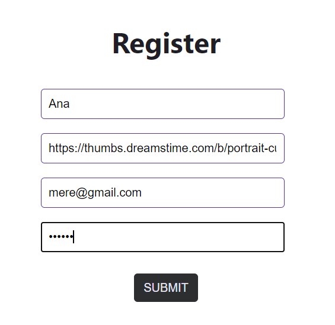6.3 Pagina Utilizatorului
Interfața userului: In aceasta pagina se incarca chatul pentru client de unde poate contacta administratorul site-ului. Acest chat apare în funcție de preferințele configurate in prealabil de către administrator.
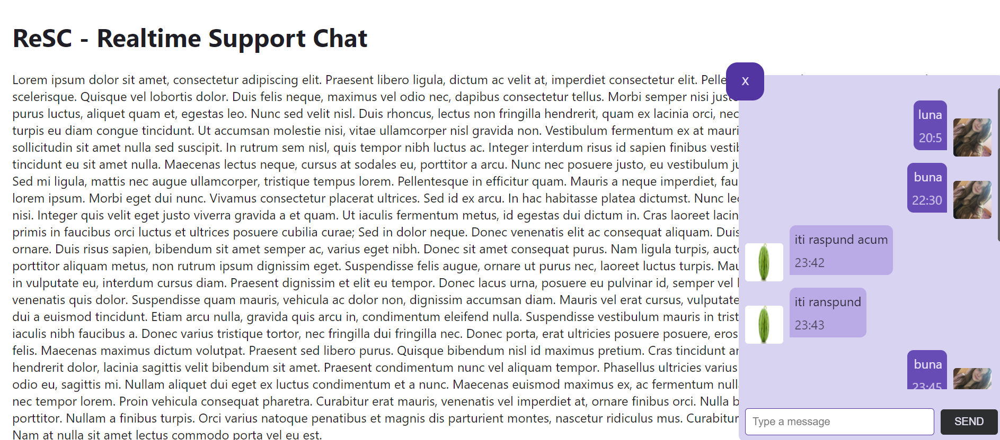 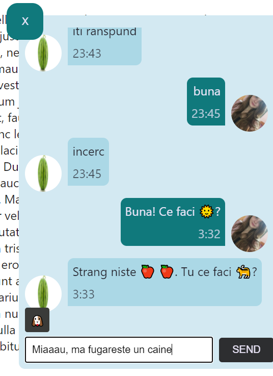Butoane
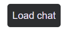 ;6.4 Pagina Administratorului
Interfața administratorului: In aceasta pagină se afla toate funcționalitățile pe care le are la dispoziție administratorul.
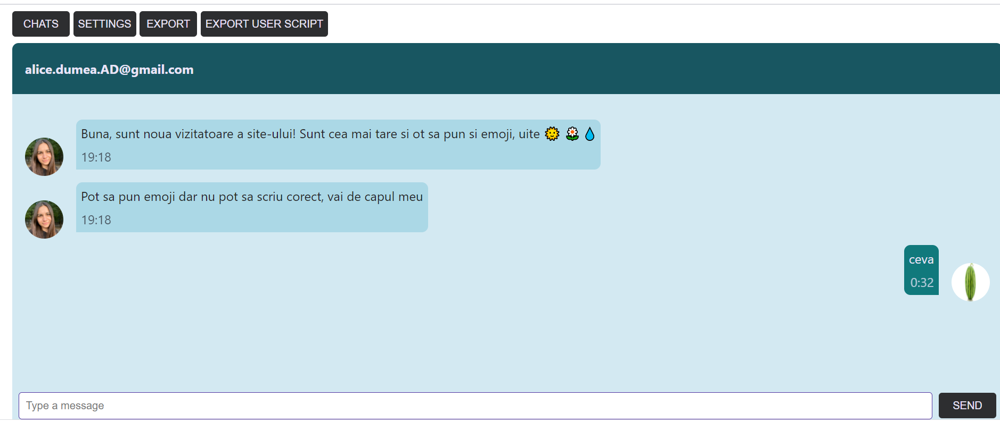 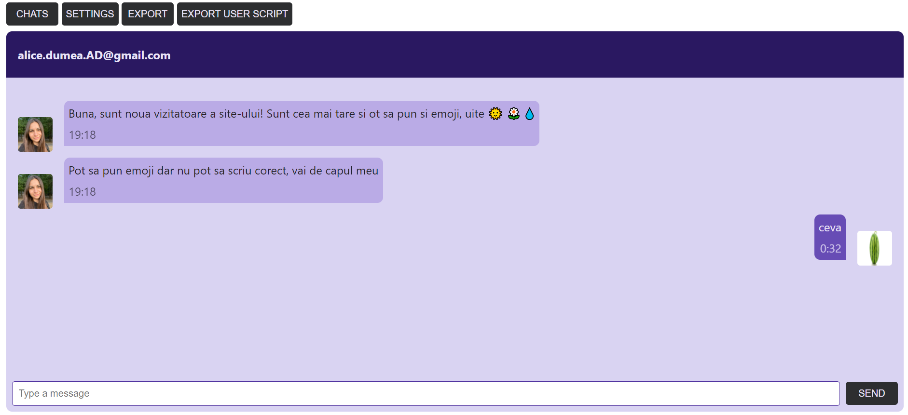Butoane
Din butonul "CHATS" administratorul poate vedea toate conversațiile și o poate selecta pe cea dorita.
 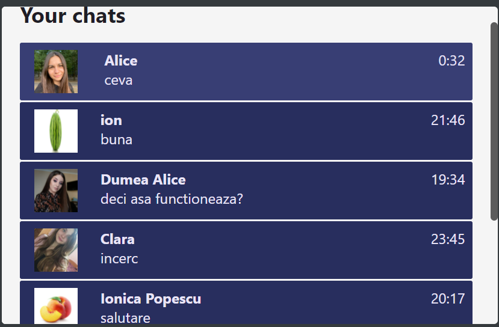
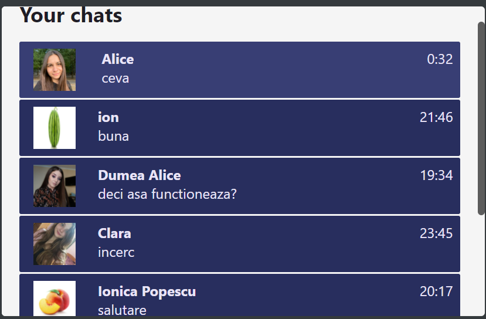
Butonul "EXPORT" are rolul de a livra administratorului un document în format CSV cu date despre utilizatori.
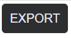Pentru a exporta scriptul necesar pentru punerea în pagina a chatului este suficient să apăsați butonul "EXPORT USER SCRIPT".
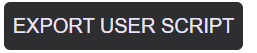Butonul "SETTINGS" pune la dispoziția administratorului o serie de setări pentru configurarea aplicației sale și a clientului. Acesta poate seta tema de culori, pozitia în pagina a chatului clientului cât și aspectul avatarului.
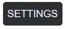 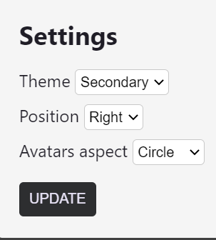6.5 Paginile sunt Responsive
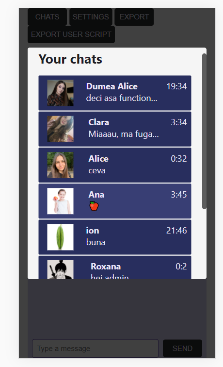 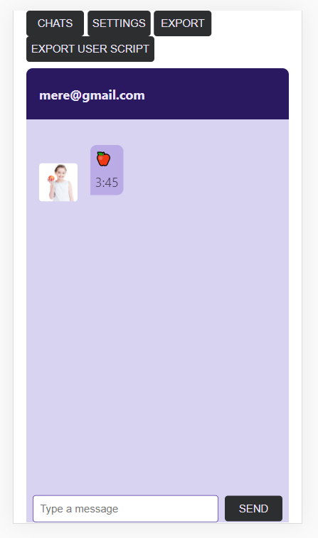7. Performanta
Rezultatele testului Lighthouse obtinute pentru aplicatia administratorului si pentru cea a clientilor
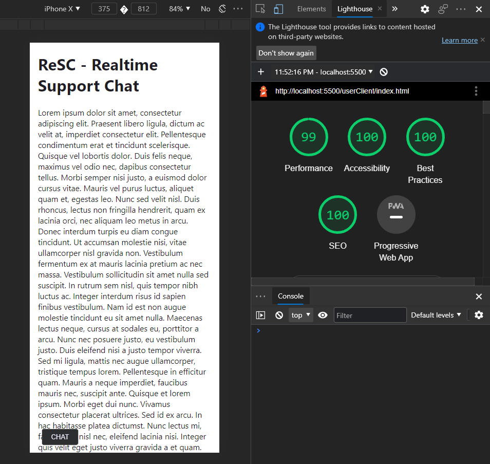 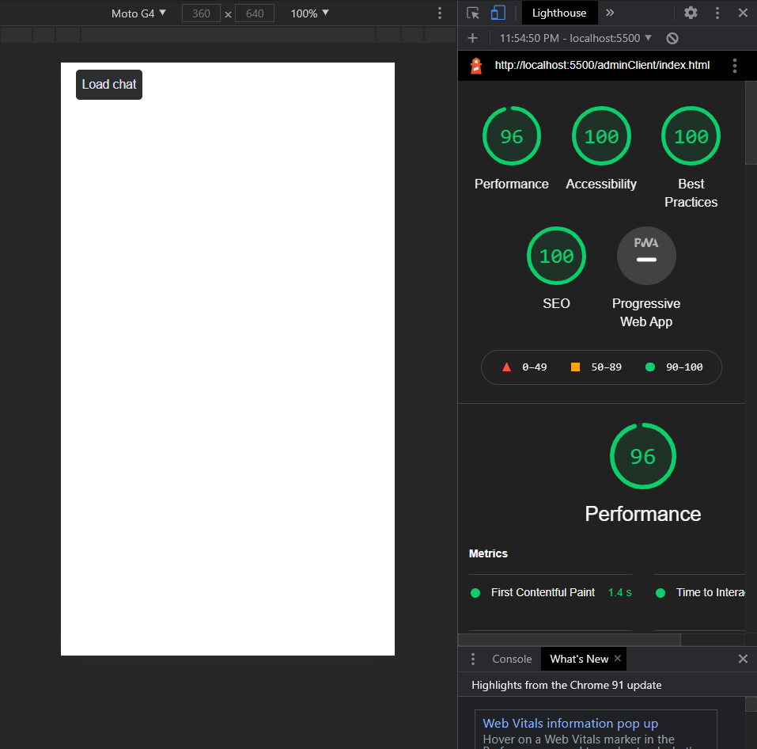